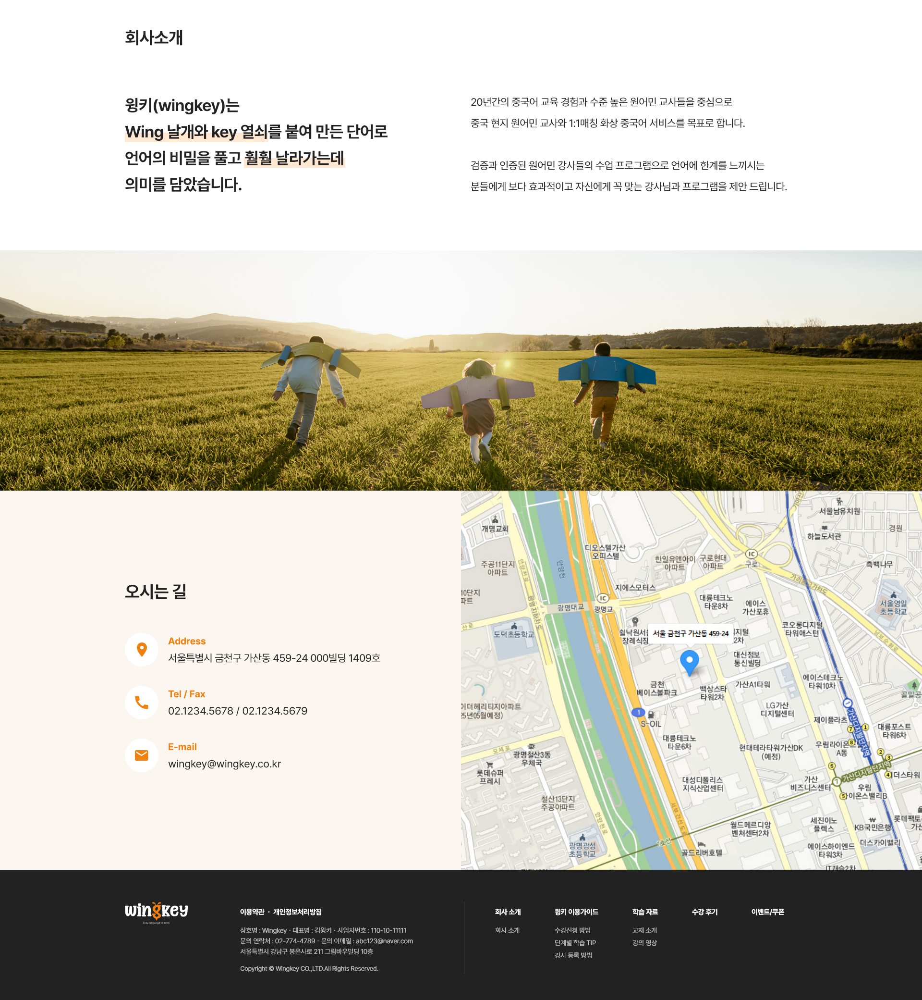
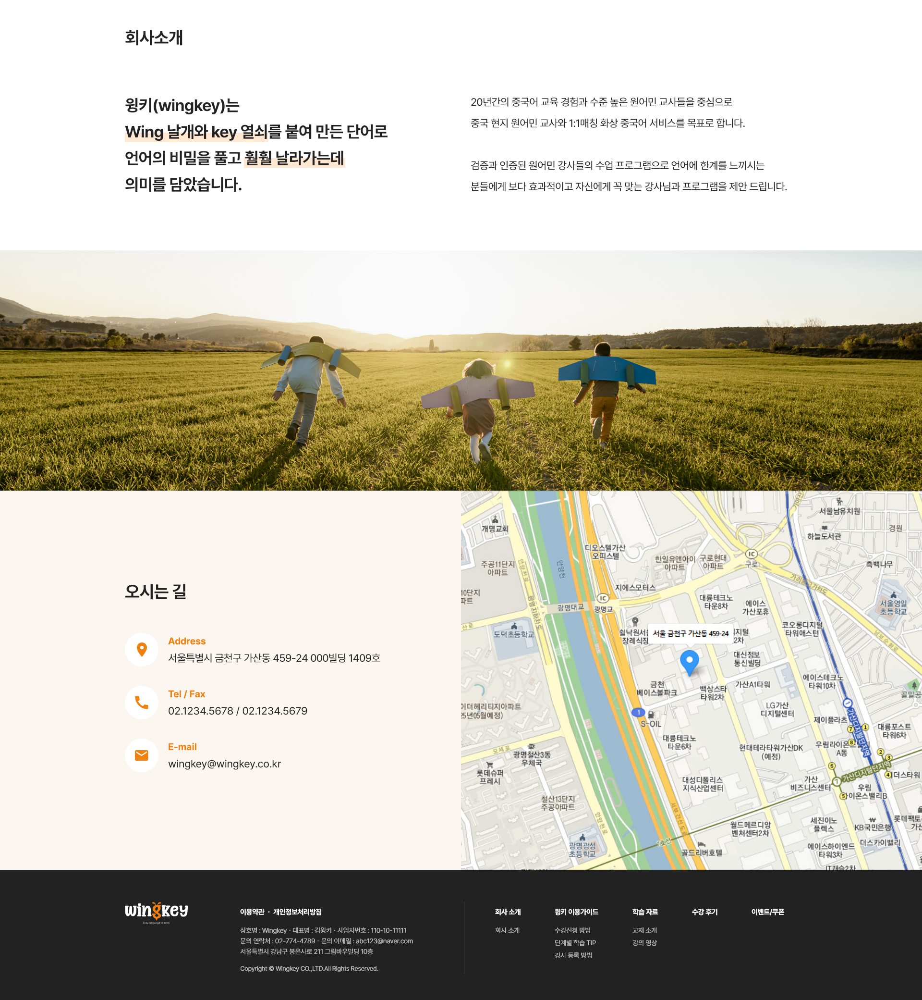

1.국기or 국가명이 표기되어있지 않으며 입력 검색이 불가능해 방대한 양의 전세계 전화번호를 스크롤을 통해서만 찾아야함
1.국기or 국가명이 표기되어있지 않으며 입력 검색이 불가능해 방대한 양의 전세계 전화번호를 스크롤을 통해서만 찾아야함 [국기]와[국가명]을 함께 표시하고 입력 검색 기능을 추가, 연관 입력항목끼리 그룹화하여 5개 테스크로 축소 했습니다.
[국기]와[국가명]을 함께 표시하고 입력 검색 기능을 추가, 연관 입력항목끼리 그룹화하여 5개 테스크로 축소 했습니다.로그인 > 수강신청
진입이 어려운 수강신청 페이지
윙키는 각 언어별(중국어,영어) 수강신청 페이지로 진입해 원하는 튜터의 수업을 결제해야 해야하나
많은 사용자들이 수강신청 페이지 진입 자체를 어려워했습니다.

최우선적으로 pc/모바일 포함 페이지/ 버튼레이블 불일치 오류로 인한 수강신청 탐색 방해요소를 제거했습니다.
 스크롤시
스크롤시


 



 [즐겨찾기를 고려한 상품 썸네일]
[즐겨찾기를 고려한 상품 썸네일]
 [통일된 텍스트 위계]
[통일된 텍스트 위계]

 [최상단 배너 높이조절]
[최상단 배너 높이조절]